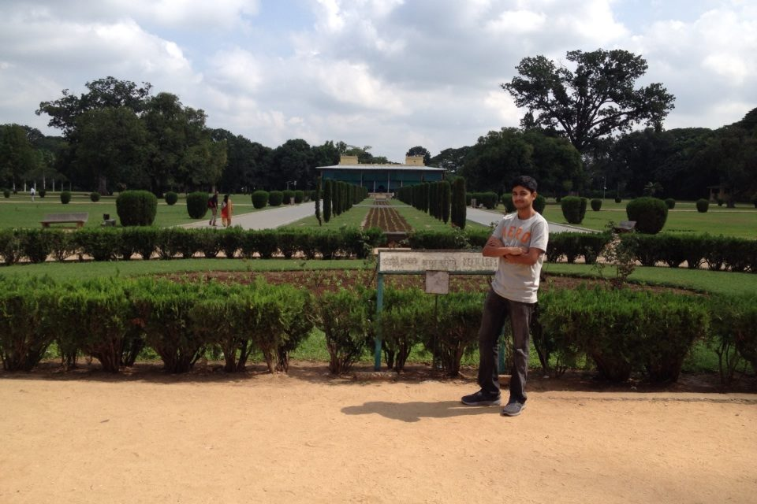

| Home | Projects | Activities |
|---|
About Me
Hello, I am Kishan Rajasekhar. I am currently an undergraduate computer science major at the University of California, Irvine (UCI). I am from San Jose, California. This is one of the cities in the Silicon Valley, so naturally, math and computing is heavily emphasized in the schools in this area. I went to Evergreen Valley High School, where I took my first programming class. It was AP Computer Science, and I coded in java using the eclipse IDE. My goal is to learn many skills in the field of computing. In UCI, I am in the school of Information and Computer Science (ICS). I just finished my first year at this university. I coded in Python throughout my first year, using IDLE and Eclipse. This year, I am learning c++ and data structures and will take some upper division courses.
